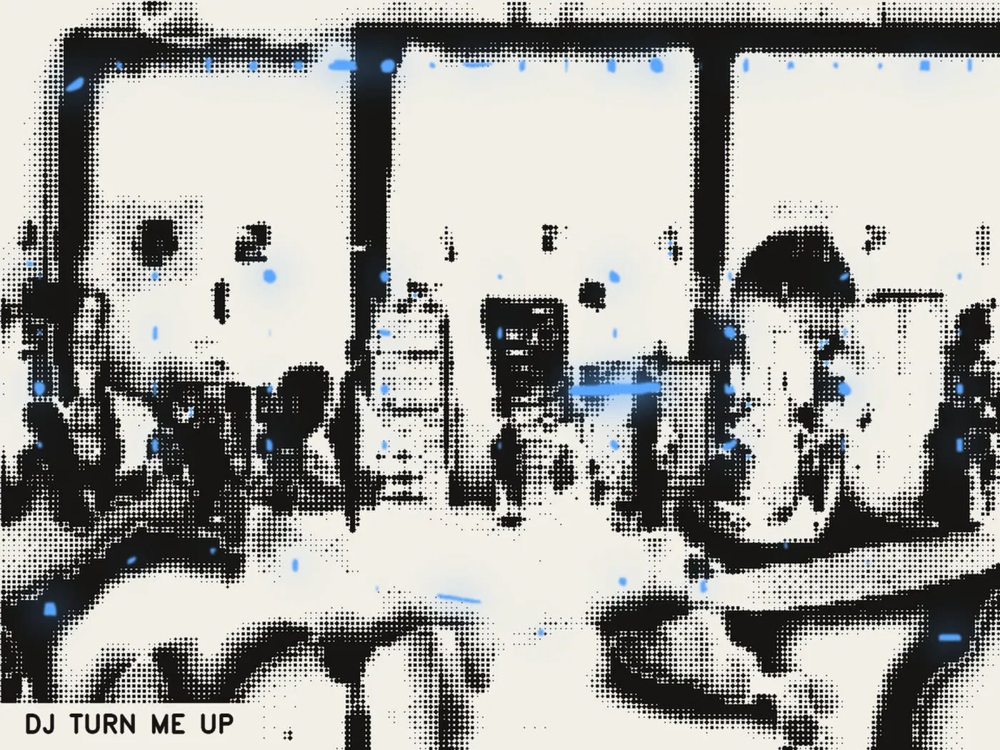
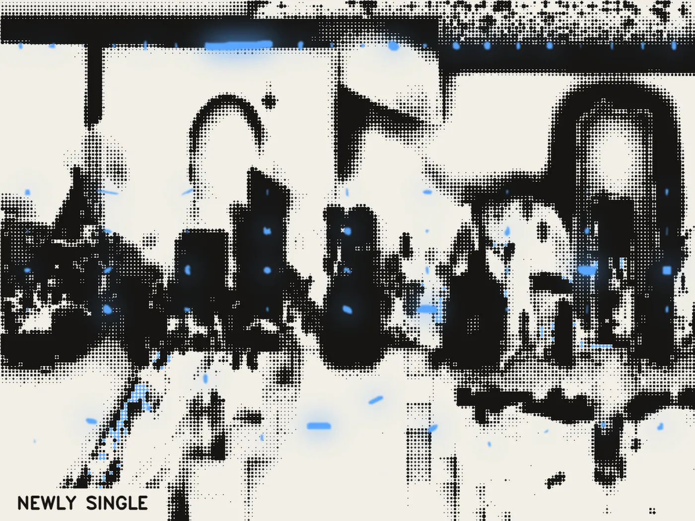
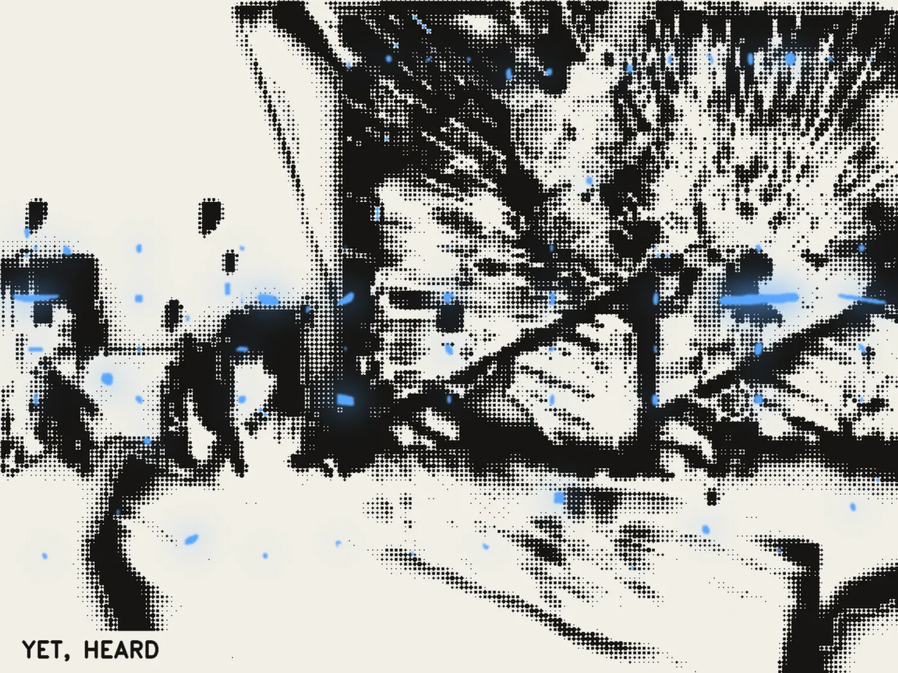
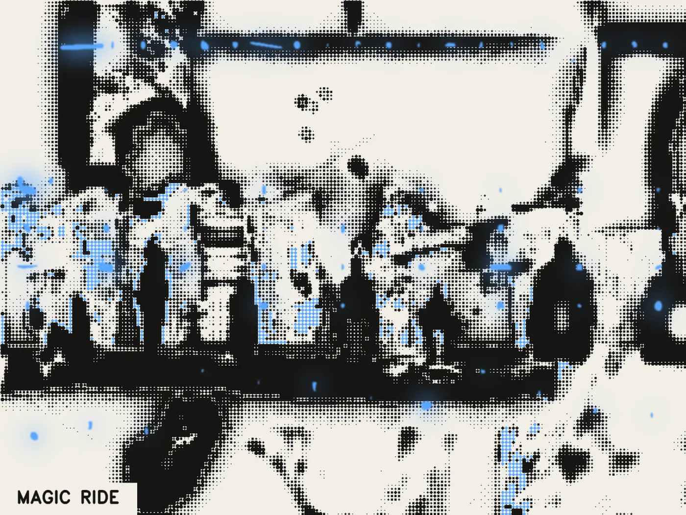
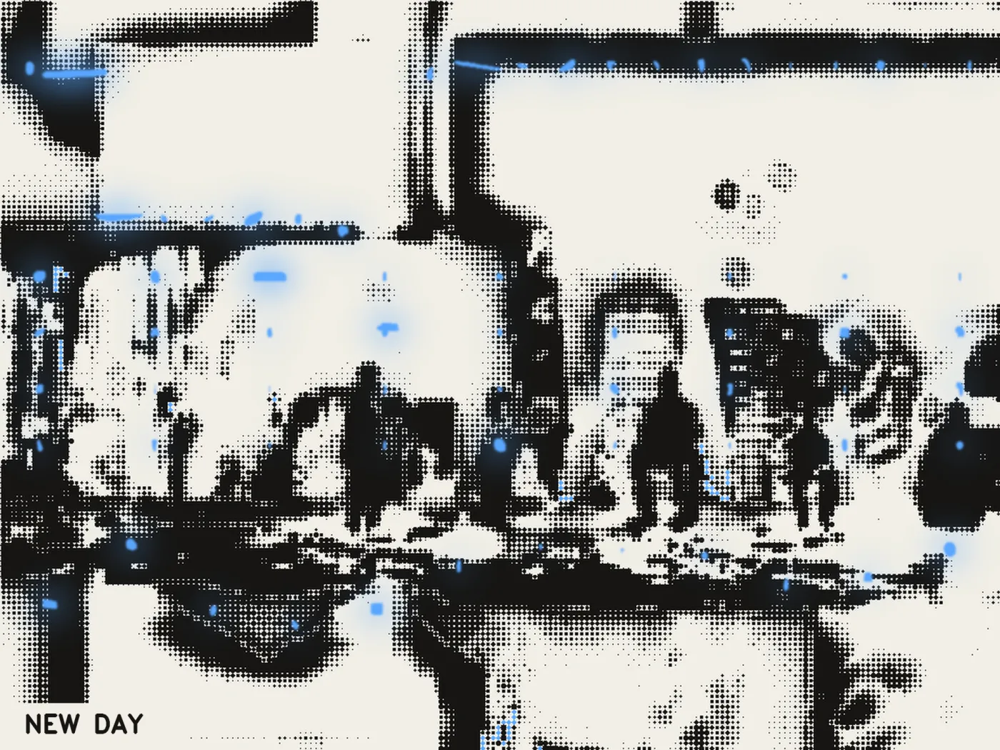
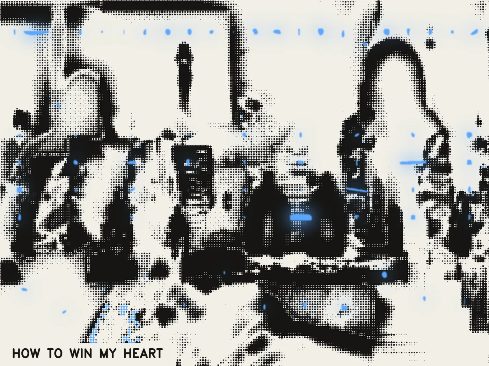

THE SETS — built, then drawn, then lit
The sheets pasted elements onto paper; the weave dissolved a picture into them. Neither built anything. These are built, in the order a stage is built, out of what the archive turned out to contain:
- The sky — 98 instances, a band across the back, feathered so it has no edge.
- The skyline — 220 buildings, standing on a common baseline.
- The facade — 248 windows, tiled into the standing mass in rows.
- The stair — only 10 exist in 135 shots; both get used.
- The floor — water if the poem's places include any, otherwise road.
- The bodies — on the ground line, and only ones whose feet are in frame.
- Then the dot law over all of it.
- Then the lights, last, on top of the finished ink.
WHY THE ORDER IS THE WHOLE IDEA
The sky, the facade, the stair and the body come from four different films. What makes them one place rather than a pile is that beflix goes over the assembled set — quantising all of it into one cream page with one ink, after which there is no such thing as a foreign element. That is what the dot law was built for and it had only ever been used on found footage, never on a constructed scene.
And the lights arrive after the ink, in the accent, as a wide soft halo with a small hard core. They are the only colour in the frame because they are the only thing that did not go through the lattice. In a suite of night pictures, the lights should be the one thing that survives being drawn.
TWO THINGS THAT HAD TO BE RETUNED
A set is not a photograph. Run with the settings tuned for footage it came back as slabs — the body layer exists to fill a figure the source records as flat, and a collage has no such figure, so the term just floods it. Body off, tone down, detail up, ground radius from 34 to 14, because a plate's structures are small and local where a night photograph's are large and soft.
Light goes where light would be. Scattered uniformly the lamps read as blue stickers on a drawing. They are placed on the facade rows, along the detected roofline of the standing mass, and low on the floor as reflections — which is a set-dresser's job, and only possible because the scene was built rather than found.

{kind=link}

{kind=link}

{kind=link}

{kind=link}

{kind=link}

{kind=link}

{kind=link}

{kind=link}

{kind=link}

{kind=link}

{kind=link}
{kind=link}

{kind=link}
{kind=link}